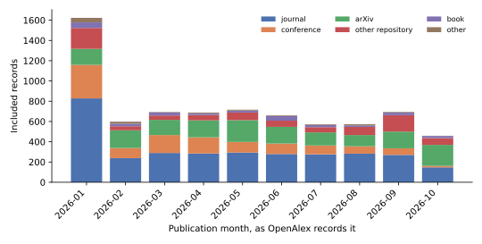
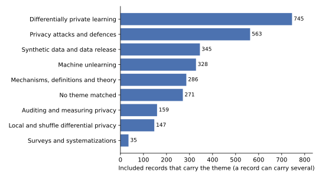
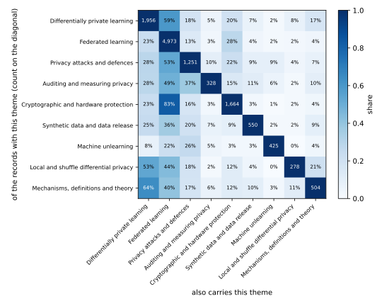

Privacy-Preserving Machine Learning in 2026: A Systematic Review
What the field published in 2026, found by one reproducible search, screened by stated rules and read theme by theme
What did the field of privacy-preserving machine learning publish in 2026, on which problems, and where? This note answers with a systematic review: thirteen search strings run on one bibliographic database on 2 November 2026, screening rules that a script applies and that a hand-read sample checks, and a classification of every included record by theme, venue and application domain. It then reads the most cited papers of each theme and says what they did. The review finds a field dominated by federated learning and by attacks on large language models, a growing share of unreviewed repository uploads, and a small core of papers that change what a practitioner should do.
Suppose you want to know what the research on privacy-preserving machine learning did this year. You could read the proceedings of a few conferences, but most of the year’s papers are not in them, and the ones you happen to see are not a fair sample. A systematic review fixes this by stating, before it starts, where it will search, with which words, what it will keep, and how it will sort what it keeps. Anyone can then run the same search and get the same records. This note is such a review of the papers published in 2026, run on 2 November 2026, and every count in it comes from one script.
The note is for a reader who knows what differential privacy (DP) and federated learning (FL) are and wants a map of the year. It links to no other book and defines each term where it is used. It has two parts. The first says how the records were found and screened, and what the counts show about how much was published, by whom and where. The second reads the most cited papers of each theme and says what they claim. Every number comes from the frozen table of records that the search script wrote, and the script that computes them is code/notes/ppml_2026_review.py:
uv run python code/notes/ppml_2026_review_search.py # the search and the screening, from the cached download
uv run python code/notes/ppml_2026_review.py # the counts, figures and tables of this noteTable 1 gives the question each section answers, and Table 2 lists the few symbols the note uses.
| Section | The question it answers |
|---|---|
| Section 1 | Where did the records come from, how were they screened, and how good is the screening? |
| Section 2 | How much was published, when, where, and how much of it has been cited? |
| Section 3 | Which problems did the papers work on, and which problems go together? |
| Section 4 | What did the most cited papers of each theme do? |
| Section 5 | Which data and which models were the papers about? |
| Section 6 | What can this review not tell you? |
| Section 7 | Where should you start reading? |
| Section 8 | Which papers does the note cite, and where are they? |
| Symbol | Meaning |
|---|---|
| \(n\) | the number of included records |
| \(m\) | the number of records in a hand-read sample |
| \(\hat p\) | the share of a sample on which the reader agreed with the screening rule |
| \(p\) | the true share, which the sample estimates |
| \(\varepsilon\) | the privacy parameter of a differential-privacy guarantee, which bounds how much one record can change the output’s distribution |
| \(f\) | in \(f\)-DP, the trade-off function that a guarantee is stated with |
1 How the review was done
A review is only as good as its search and its screening, so this section states both before any count. The review asks three questions. The first question is how much the field published in 2026, and where. The second question is which problems the papers worked on, and how the problems overlap. The third question is what the papers of each problem did. The first two questions are answered by counts over every included record. The third is answered by reading, and Section 4 says which papers were read and why those.
1.1 The search
The records come from two databases. The first is OpenAlex, an open index of scholarly works. It merges the records of Crossref, arXiv, PubMed, DataCite and other sources. So it lists journals, conference proceedings, books and repositories together. Each of its records has a title, usually an abstract, a publication date, a type such as article or preprint, a primary venue and a count of citing works. The second is arXiv itself, the repository where most machine-learning research first appears, searched through its own interface. Its records have a title, an abstract, the date of first submission and a subject class, but no citation count.
The search ran on 2 November 2026 with the thirteen strings of Table 3. On OpenAlex a string was run over the title and the abstract of every work whose publication year is 2026. On arXiv it was run over the title and abstract of every paper first submitted in 2026, up to the search day. Each string names one way to protect, or to attack, the privacy of data used in learning. The strings were made wide on purpose. A paper that uses DP for anything was returned, and the screening then kept the ones about learning.
| String | OpenAlex search, over title and abstract | OpenAlex records | arXiv records |
|---|---|---|---|
| dp | "differential privacy" OR "differentially private" |
5,407 | 849 |
| fl | "federated learning" AND (privacy OR attack OR leakage OR "secure aggregation") |
11,063 | 795 |
| mia | "membership inference" |
0 | 283 |
| ppml | "privacy-preserving machine learning" OR "privacy preserving machine learning" OR "private machine learning" OR "privacy-preserving deep learning" OR "privacy-preserving inference" OR "private inference" |
0 | 85 |
| he | "homomorphic encryption" AND (learning OR inference OR "neural network" OR model) |
0 | 148 |
| mpc | ("multi-party computation" OR "multiparty computation" OR "secure computation") AND (learning OR inference OR "neural network") |
0 | 64 |
| tee | ("trusted execution environment" OR "confidential computing") AND (learning OR inference OR "neural network") |
0 | 49 |
| unlearn | "machine unlearning" |
0 | 304 |
| memor | (memorization OR "data extraction" OR "training data") AND ("language model" OR LLM) AND privacy |
0 | 165 |
| inversion | "gradient inversion" OR "gradient leakage" OR "model inversion" OR "reconstruction attack" OR "attribute inference" |
0 | 192 |
| synth | "synthetic data" AND (privacy OR "differentially private") |
0 | 248 |
| audit | "privacy audit" OR "privacy auditing" OR "auditing differential privacy" |
0 | 44 |
| split | "split learning" AND privacy |
0 | 30 |
The plan was to run all thirteen strings on both databases, and the plan was not kept. OpenAlex gives an unregistered user a daily quota of requests, and the two widest strings, on differential privacy and on federated learning, used it up. The last quarter of the federated-learning string, the records dated October to December, was not downloaded, and the eleven narrower strings were not run there at all. A review must report such a deviation rather than hide it, so Table 3 shows zero OpenAlex records for those strings, and Section 6 says what the gap costs. What it costs is bounded in one direction: an OpenAlex record on, say, membership inference is still in the review when its abstract also names differential privacy or federated learning, which Section 4 shows most do. The script that runs the searches is code/notes/ppml_2026_review_search.py, and it caches the download, so the screening can be rerun on the same records.
The strings overlap by design, because a paper on federated learning with differential privacy should be found twice rather than missed. So the records of all the searches were put together and the repeats removed, first by their identifier and then by their title. The second step matters for two reasons. The same paper is often in OpenAlex twice, once as a preprint and once as the published version, each with its own identifier. And a paper found on arXiv directly is often also in OpenAlex, which indexes arXiv with a delay. When two records had the same title after punctuation and case were removed, one was kept. The published version came before a preprint, and an OpenAlex record before an arXiv one, because it carries a citation count. The citation counts of two records were never added.
1.2 The screening
A systematic review keeps a record only when it meets criteria written down before the search, and Definition 1 states this review’s criteria. The criteria are applied by a script, not by a reader, so they are regular expressions on the title and the abstract, and the full list is in the script.
Definition 1 (An included record) A record is included when all of these hold. It is a paper, which means an article, a conference paper, a preprint, a review or a book chapter. It is in English. It is not retracted. Its title or abstract names a learning object, such as a model, training, a classifier, a language model or a neural network. And it is about privacy in one of two ways. Either its title or abstract names a privacy technique or a privacy attack, such as differential privacy, membership inference, homomorphic encryption, unlearning, synthetic data or anonymization. Or it names federated learning, or calls itself privacy-preserving, and has a privacy word in its title.
The last criterion does the real work, and its second half needs a reason. FL keeps the data on the device, and nearly every paper that uses it calls itself privacy-preserving for that reason alone. If the words were enough, the review would be a review of FL. So a paper that names no technique and no attack is included only when privacy is in its title, which is where an author puts the purpose of the paper.
The criterion also removes two other kinds of record. The first kind mentions privacy only as a motivation. A paper on a smart grid, say, notes that its users care about privacy and then trains a model with no protection, so it has no cue at all. The second kind uses a privacy technique with no learning in it, such as a differentially private histogram of ages, so it has no learning cue. All three kinds are legitimate research, but they are not privacy-preserving machine learning. This review takes that term to mean the protection of data used to train, query or release a learned model, or an attack on that protection. Table 4 gives the records at each stage.
| Stage | Records |
|---|---|
| Returned by the searches, with repeats | 19,677 |
| Distinct records (one per identifier in its database) | 16,888 |
| Distinct papers (one per title) | 15,016 |
| Excluded: privacy only as a setting | 5,063 |
| Excluded: not a paper | 976 |
| Excluded: no machine learning | 855 |
| Excluded: no privacy technique or setting | 681 |
| Excluded: not in English | 151 |
| Excluded: retracted | 11 |
| Included | 7,279 |
A record without an abstract was screened on its title alone, and a record with no cue in the title was then excluded. This loses some papers, and Section 6 returns to it.
1.3 Checking the screening by hand
A rule written as a regular expression will keep some records it should not and drop some it should keep. A reader can measure both kinds of error on a sample, so the author read two random samples of records. The first sample has \(m\) = 120 records, where \(m\) is the sample size, drawn from the included set with a fixed random seed. Each was read, title and abstract, and marked as a paper on privacy-preserving machine learning or not. The share marked as such is the precision of the screening, written \(\hat p\). The second sample, of 40 records, was drawn from the records that the rule excluded for want of a learning cue, and each was marked as rightly or wrongly excluded. The decisions and the reason for each disagreement are in the file next to the script, so a second reader can check them.
A share measured on a sample is uncertain, and the uncertainty should be shown. If the true precision is \(p\), the number of agreements in a sample of \(m\) records is binomial with \(m\) trials and success probability \(p\). The Clopper–Pearson interval is the set of values of \(p\) under which the observed count is not in the most extreme 2.5% of either tail. It is exact, which means its coverage is never below 95%, and it is wider than the normal approximation on a small sample. Table 5 gives both samples, their shares and their intervals.
The precision is \(\hat p\) = 89%, with an interval from 82% to 94%. The thirteen false inclusions were security papers, systems papers and reviews that mention a privacy attack or a technique in passing. Of the records excluded for want of a learning word, 82% were rightly excluded. The interval is wide because the sample is small. The seven that were wrongly excluded are clustering, principal component analysis and trajectory synthesis, which the learning cue does not know. Section 6 turns these shares into counts.
| Sample | Records read | Decision agrees with the rule | Share | 95% interval |
|---|---|---|---|---|
| Included by the rule | 120 | 107 | 89% | 82% to 94% |
| Excluded by the rule for want of a learning cue | 40 | 33 | 82% | 67% to 93% |
1.4 Extraction and classification
From each included record the script keeps the title, the date, the type and the venue with its kind. It also keeps the citation count, the first author, the number of authors, the search strings that returned it and the topic that OpenAlex, the first database, assigns. It then classifies the record twice, again by regular expressions on the title and abstract. The first classification is by theme, the problem the paper works on, and Table 8 in Section 3 lists the ten themes with what each rule looks for. A record can carry several themes, and a record that matches none is counted as such rather than forced into one. The second classification is by domain, the kind of data or model the paper is about. The domains include language models, images, graphs, health records and the internet of things, and Section 5 gives them.
Two choices in the classification need a word. A record is a survey only when its title says so, because “survey data” in an abstract is a kind of data, not a kind of paper. And the theme of private training is matched only when a DP word and a training word fall within a few words of each other. Otherwise a paper that trains a model and, separately, releases a private statistic would count as private training. Every rule is in the script, and the test in tests/test_notes_ppml_2026_review.py checks each on examples.
2 What was published, and where
The screening kept \(n\) = 7,279 records out of the 15,016 distinct papers the searches returned. This section counts them: by month, by the kind of venue, and by how often they have been cited. The counts answer the first question of the review, how much the field published in 2026 and where, and they also show what the record set can and cannot support.
2.1 How many, and when
Figure 1 shows the included records by the month of their publication date, split by the kind of venue. Two features of the figure are artefacts of the data, not of the field. The January column is the tallest because 1,077 records, 15% of the set, carry the date 1 January exactly. A journal that dates a whole volume to the first day of its year puts every paper of the volume there, so January counts papers from the whole year. The October column is short because the search ran on 2 November, OpenAlex indexes a paper some weeks after it appears, and the federated-learning string’s last window was never downloaded.

Between those two columns the field published between 573 and 716 included records a month. So a reader who wants to follow privacy-preserving machine learning faces about twenty new papers a day, and most of them are not in the venues that such a reader would normally watch.
2.2 Where
Table 6 gives the kind of venue of each record, as the databases list it, with arXiv, the preprint server, as a kind of its own. Journals hold the largest share, then arXiv, then conference proceedings. One record in eight sits in a repository other than arXiv, and most of those are on Zenodo, a general archive where anyone can deposit a file without review. The 500 Zenodo records are 7% of the set, and only 2% of the records in such repositories have been cited at all. Those shares, together with the share from arXiv, show that about a third of the year’s output had no peer review at the time of the search.
| Where the record was published | Records | Share | With a citation count | Cited at least once |
|---|---|---|---|---|
| a journal | 3,186 | 44% | 3,186 | 22% |
| conference proceedings | 1,216 | 17% | 1,216 | 12% |
| arXiv | 1,642 | 23% | 686 | 1% |
| another repository (Zenodo, SSRN, Research Square, …) | 839 | 12% | 839 | 2% |
| a book or book series | 274 | 4% | 274 | 11% |
| no venue listed, or another kind | 122 | 2% | 122 | 8% |
Table 7 lists the twenty journals and proceedings with the most records. Scientific Reports, a general journal, leads with 144 records. The specialist venues of the field are far down the list. The IEEE Transactions on Dependable and Secure Computing has 57 records and the AAAI conference 32. The IEEE Transactions on Information Forensics and Security has 28, and the Proceedings on Privacy Enhancing Technologies 21. The fifteen venues this review treats as the core of the field, listed in Section 4, hold 166 records between them, 2% of the set. One entry of the table is a warning: a journal whose title names drug delivery has 27 records on privacy-preserving learning. So the record list of a bibliographic database holds some venues whose relation to the field is unclear, and a count of records is not a count of contributions.
| Venue | Records | Cited at least once |
|---|---|---|
| Scientific Reports | 144 | 36% |
| Lecture notes in computer science | 83 | 11% |
| Lecture notes in networks and systems | 81 | 0% |
| IEEE Internet of Things Journal | 63 | 40% |
| IEEE Access | 61 | 20% |
| IEEE Transactions on Dependable and Secure Computing | 57 | 37% |
| IEEE Transactions on Consumer Electronics | 44 | 25% |
| Communications in computer and information science | 42 | 7% |
| Electronics | 38 | 29% |
| Proceedings of the AAAI Conference on Artificial Intelligence | 32 | 38% |
| Procedia Computer Science | 31 | 10% |
| IEEE Transactions on Information Forensics and Security | 28 | 46% |
| Discover Artificial Intelligence | 27 | 26% |
| International Journal of Drug Delivery Technology | 27 | 0% |
| International Journal of Artificial Intelligence and Machine Learning | 26 | 0% |
| International Journal of Computer Information Systems and Industrial Management Applications | 26 | 0% |
| Cluster Computing | 25 | 32% |
| Computer Networks | 24 | 21% |
| IET conference proceedings. | 23 | 4% |
| Knowledge-Based Systems | 22 | 32% |
2.3 Citations
OpenAlex gives a citation count for 6,323 of the records, every record it holds, while a record found only on arXiv has none. The median count is zero. Of the records with a count, 86% have not been cited, 37 have ten citations or more, and the most cited record has 33. Papers published in the same year as the search have had little time to be cited, so these numbers measure how early the year is, not how good the papers are.
The counts still say something, because the few records that have been cited are of one kind. The most cited is a review of single-cell sequencing that mentions FL in passing. Then come a Bayesian FL framework for consumer devices, a scoping review of DP in medical deep learning, an FL governance framework for Canadian health data, and a hierarchical federated anomaly detector for cloud services. Four of the five are about health or infrastructure, and three are frameworks or reviews rather than new mechanisms or attacks. So citations in the first year reward breadth and a large readership, and a review that read the most cited papers alone would describe applied federated learning and nothing else. Section 4 therefore reads by venue and by random draw as well as by citations.
3 The themes
The second question of the review is which problems the papers worked on, which Section 1 called the themes. Table 8 gives the ten themes, what each rule looks for, and how many records carry each. A record carries every theme its title or abstract matches, so the shares add up to more than one, and 271 records match no theme at all.
| Theme | What the rule looks for | Records | Share |
|---|---|---|---|
| Differentially private learning | DP-SGD and other private training or fine-tuning, and the accounting of its budget | 1,956 | 27% |
| Federated learning | federated or split learning, and secure aggregation | 4,973 | 68% |
| Privacy attacks and defences | membership, attribute and property inference, reconstruction, gradient inversion, extraction and memorization | 1,251 | 17% |
| Auditing and measuring privacy | auditing or estimating a guarantee from a trained model | 328 | 5% |
| Cryptographic and hardware protection | homomorphic encryption, secure computation, secret sharing, trusted hardware and zero-knowledge proofs | 1,664 | 23% |
| Synthetic data and data release | synthetic data, data release and query release | 550 | 8% |
| Machine unlearning | unlearning, deletion and the right to be forgotten | 425 | 6% |
| Local and shuffle differential privacy | local differential privacy, randomized response and the shuffle model | 278 | 4% |
| Mechanisms, definitions and theory | mechanisms, divergences, composition, lower bounds and estimation | 504 | 7% |
| Surveys and systematizations | a survey, review, systematization or taxonomy, by its title | 243 | 3% |
| No theme matched | 271 | 4% |

Federated learning is the theme of 68% of the records, and this share needs a careful reading. The screening already excluded 5,063 federated-learning papers that named no privacy technique or attack and had no privacy word in their title. The 4,973 that remain are the ones that present privacy as part of their purpose. But 2,070 of them, 42% of the federated theme, carry no other theme. They name no DP, no encryption, no attack and no audit. For these papers, keeping the data on the device is the whole of the privacy protection, and the paper’s contribution lies elsewhere, in the model, the aggregation or the application.

Figure 3 shows how the themes overlap. The cryptographic theme is the one most tied to FL, with 83% of its records federated. The reason is that secure aggregation, homomorphic encryption of model updates and trusted hardware on the server are mostly studied as parts of a federated system. The attack theme is federated in 53% of its records, as gradient inversion and membership inference against shared updates are the attacks that paper after paper tests. Differentially private learning is federated in 59% of its records. The theme that stands apart is machine unlearning, federated in only 22% of its records and about large language models (LLMs) in 44%, and 79% of its records are on arXiv. Unlearning is the theme that moved fastest and furthest from the federated setting in 2026.
Two smaller patterns complete the picture. Surveys are 243 records, and 81% of them survey federated learning, so the field reviews itself along the same lines on which it publishes. And 391 records, 5% of the set, have the word blockchain in their title. A ledger records model updates or client reputations next to the privacy mechanism in these papers. The core venues almost never publish that combination, and the long tail of journals publishes it often.
4 Theme by theme: what the papers did
Counts say what the field worked on, not what it found, so this section reads. Reading every included record is beyond one author, and Section 2 showed that the most cited records would give a skewed sample. The review therefore read, for each theme, three sets of records by their abstracts. The first set is every record of the theme published at one of fifteen core venues of the field, or a random twelve of them when there are more. Table 9 lists the fifteen: the privacy and security conferences and journals, and the machine-learning conferences. The second set is the five most cited records of the theme in OpenAlex. The third is eight records of the theme drawn at random from arXiv, with a fixed seed. Table 10 gives the counts, and every paper named below is in Section 8.
| Core venue | Included records |
|---|---|
| Proceedings on Privacy Enhancing Technologies | 21 |
| USENIX Security Symposium | 0 |
| ACM Conference on Computer and Communications Security | 2 |
| IEEE Symposium on Security and Privacy | 5 |
| Network and Distributed System Security Symposium | 12 |
| International Conference on Learning Representations | 0 |
| International Conference on Machine Learning | 5 |
| Conference on Neural Information Processing Systems | 0 |
| Conference on Artificial Intelligence and Statistics | 0 |
| AAAI Conference on Artificial Intelligence | 32 |
| Transactions on Machine Learning Research | 0 |
| IEEE Transactions on Information Forensics and Security | 28 |
| IEEE Transactions on Dependable and Secure Computing | 57 |
| Journal of Privacy and Confidentiality | 2 |
| ACM Transactions on Privacy and Security | 2 |
| Theme | Records with an abstract | At a core venue | Read: core venue | Read: most cited | Read: random arXiv |
|---|---|---|---|---|---|
| Differentially private learning | 1,824 | 49 | 12 | 5 | 8 |
| Federated learning | 3,957 | 95 | 12 | 5 | 8 |
| Privacy attacks and defences | 1,218 | 43 | 12 | 5 | 8 |
| Auditing and measuring privacy | 319 | 7 | 7 | 5 | 8 |
| Cryptographic and hardware protection | 1,564 | 34 | 12 | 5 | 8 |
| Synthetic data and data release | 537 | 11 | 11 | 5 | 8 |
| Machine unlearning | 405 | 10 | 10 | 5 | 8 |
| Local and shuffle differential privacy | 249 | 16 | 12 | 5 | 8 |
| Mechanisms, definitions and theory | 501 | 21 | 12 | 5 | 8 |
| Surveys and systematizations | 216 | 3 | 3 | 5 | 8 |
Only 166 records, 2% of the set, are at a core venue at all. Two of the three large machine-learning conferences contribute none and the third contributes five, because OpenAlex indexes little of their 2026 proceedings, so their papers reach the set mostly through arXiv. The reading is thus a reading of the field’s most selective venues, of its most visible papers and of a random slice of its preprints. It is also a reading of abstracts, which Section 6 weighs.
4.1 Differentially private learning
This theme holds 1,956 records. Of these, 59% are federated, 17% are about language models and 28% are about health. Its core-venue papers work on three problems. The first is to make training with stochastic gradient descent (SGD) made private, called DP-SGD, lose less accuracy. Xu et al. (2026) smooth each example’s gradient with momentum before clipping it and filter the noise afterwards, to lower both the noise and the bias that clipping adds. Zheng et al. (2026) fine-tune a language model with noise only in the low-dimensional subspace where the task’s updates live. Yang et al. (2026) build steering vectors for language models under DP in the same spirit. Shi et al. (2026) study private gradient descent (GD), called DP-GD, and find a learning task where it generalizes better than GD itself, which is a rare theoretical result in the theme’s favour.
The second problem is to account for the budget more tightly. Liang et al. (2026) prove that the privacy loss of DP-SGD converges with the number of iterations, when the loss is smooth and the parameters stay in a bounded set. So a long run no longer pays for every step. Xiang et al. (2026) revisit hyperparameter tuning, show by auditing that the generic analysis of private selection is loose in the white-box setting, and give a tighter one. Annamalai et al. (2026) audit DP-SGD trained with shuffling instead of Poisson sampling and find that the reported guarantees, computed as if sampling were Poisson, can be wrong. These three papers share a method: they put a reported \(\varepsilon\) to the test instead of taking it from the accountant, and Section 4.4 returns to it.
The third problem is to combine DP with another protection. Capano et al. (2026) run inference of a transformer inside secure computation and train it with DP, and show that the naive combination loses more accuracy than either alone. Zhou et al. (2026) prove convergence for training under fully homomorphic encryption with polynomial activations and add DP without per-example clipping. Takagi and a co-author (2026) secure the follow the regularized leader (FTRL) variant of private training, DP-FTRL, against a malicious server. They do so with a trusted execution environment (TEE), a protected part of the server’s processor, that signs what the server does.
The most cited paper of the theme is a scoping review, not a method. Mohammadi et al. (2026) read 74 studies of DP in medical deep learning. They report that DP-SGD keeps clinically acceptable accuracy at a budget near \(\varepsilon = 10\) and loses much at \(\varepsilon = 1\). Several of the studies also found that DP widens the gaps between patient subgroups. The random arXiv records agree with the pattern of the venues. Sopa et al. (2026) give a user-level private regression for panel data, and Wang et al. (2026) give risk bounds for DP-SGD with correlated noise. Lipcsey-Magyar and a co-author (2026) and Akyol et al. (2026) measure what DP-SGD costs on traffic flows and on electrocardiograms, and both report the trade-off rather than a way around it.
4.2 Federated learning
This is the largest theme, with 4,973 records, and it has two literatures. The first is the one the core venues publish, and it is about what leaks through the shared updates and how to stop it. Zhang et al. (2026) in HeteroFed adapt the clipping and the noise to each client, and Wang et al. (2026) do the same for asynchronous rounds. Hu et al. (2026) show the other side: their Venom attack reconstructs training images from gradients protected by DP noise, using a diffusion model as a prior, without knowing the noise distribution. Jin et al. (2026) protect vertical FL end to end by splitting the aggregator across several servers that run secure computation and release only a DP model.
Two core-venue papers break what others built. Wu et al. (2026) show that a server with a TEE can still roll back its state and replay aggregations, and build a ledger of several such environments to prevent it. Lee and a co-author (2026) break a published scheme that encrypted gradients with additive homomorphic encryption (HE), in a two-page comment. It is a reminder that a security proof in a journal is not always one.
The second literature is the one the most cited papers come from. Tian et al. (2026), the most cited federated paper, propose a Bayesian federated framework for consumer devices and name no privacy mechanism beyond keeping data local. Li et al. (2026) add two stages of DP to a hierarchical federated anomaly detector. Yazdinejad and a co-author (2026) propose a governance framework for health data in Canada with DP, consent and fairness audits inside it. Two of the five most cited are systematic reviews, by Fu et al. (2026) on differentially private federated learning and by Jimenez-Gutierrez et al. (2026) on attacks and defences in 203 papers. The random arXiv records sit between the two literatures. Wei et al. (2026) set the clipping norm of each layer from the median gradient norm. Sharma et al. (2026) compare DP and HE for cardiovascular risk models. Joo et al. (2026) give a secure aggregation protocol for one-bit gradients that tolerates dropouts.
One empirical paper among the random records deserves a line of its own. Parampottupadam et al. (2026) train a small transformer on radiology reports across six clients and reconstruct text from the gradients with an active malicious server. They find that the choice of tokenizer changes how much leaks, with the architecture fixed. So a design choice that no privacy analysis mentions changes the leakage, which is the kind of fact only an attack can find.
4.3 Privacy attacks and defences
The attack theme holds 1,251 records, and 40% of them are on arXiv. Of the records, 53% are federated and 31% are about language models. The core-venue attacks are against FL, and they attack in four ways. Zhang et al. (2026) in TNT inject small perturbations during training so that activations take a shape from which training samples can be reconstructed, for larger batches than before. Gong et al. (2026) in Sleight hide a second model inside the shared parameters and use it to extract data without the detectable changes earlier attacks needed. Luan et al. (2026) run membership inference against a black-box federated model by poisoning and then scoring the poison’s effect over time, with no knowledge of the other clients’ data. Yang et al. (2026) infer the edges between clients’ graphs in federated graph neural networks (GNNs) by poisoning.
The remaining core-venue attacks break a defence rather than the plain protocol. Zhang et al. (2026) in GDBR recover labels when only the classification head’s gradients are encrypted, and so show that partial encryption gives a false sense of privacy. Zhou et al. (2026) turn the attack on unlearning itself: the server records the parameters before and after a federated unlearning request and inverts the difference.
The defences at the core venues are partial by design. Liu et al. (2026) protect the layers whose gradients carry more reconstructable information and leave the others alone. Jiang et al. (2026) in CausShield keep only the causal features of a sample in vertical FL. Neither gives a guarantee in the sense of DP, and both are evaluated against the attacks that exist today.
The arXiv records show where the attacks went in 2026: to language models. Tan et al. (2026) show that the routing information a mixture-of-experts model emits during inference improves membership inference on its fine-tuning data. Zhai et al. (2026) and Kulkarni et al. (2026) attack fine-tuned diffusion language models and retrieval-based in-context learning. Cai et al. (2026) run black-box membership inference on fine-tuned text-to-speech models, which leak both the voice and the words. Cebere et al. (2026) take the opposite direction and audit a deployed model with no training run at all, by correcting for the distribution shift between known members and known non-members. Two papers in the hand-read sample belong here as well. Graph-based retrieval-augmented generation (RAG) systems leak their knowledge graph to subgraph reconstruction attacks. And batch normalization makes a network memorize its outliers more, so it leaks more under membership inference.
4.4 Auditing and measuring privacy
Auditing is the smallest technical theme, with 328 records, but it is the one whose core-venue papers change what a practitioner should do. Three of the seven come from one conference. Annamalai et al. (2026) audit DP-SGD with shuffling and find leakage above the reported bound. Xiang et al. (2026) audit hyperparameter tuning and find the generic bound loose. Zheng et al. (2026) prove that the privacy cost of a multi-layer graph neural network converges with depth, where earlier analyses charged for every layer, and check the result by audit. Deng et al. (2026) then question the audits themselves. The canary examples that audits insert may not be the queries that leak most, because the most informative query shifts during training. So they optimize the query and get tighter lower bounds on the privacy parameter \(\varepsilon\).
The random arXiv records make the same point from the attacker’s side. Brännvall (2026) shows that the three leading membership inference attacks are one likelihood-ratio test under different distributional assumptions. The paper gives a rule for choosing among them by the number of shadow models one can afford. Li et al. (2026) calibrate text-rewriting mechanisms under local DP empirically, because their nominal \(\varepsilon\) values cannot be compared across mechanisms. Mancera et al. (2026) audit which samples a model adapted with low-rank adapters was trained on. The most cited records of the theme are the reviews and frameworks already met, which use the word audit for governance rather than for a measurement of \(\varepsilon\). The theme’s method is one: state a guarantee, build the strongest attacker the threat model allows, and compare what the attacker achieves with what the guarantee permits.
4.5 Cryptographic and hardware protection
The cryptographic theme has 1,664 records, 83% of them federated, and it divides by what is protected. The largest part protects the model updates of federated learning. Wang et al. (2026) in DeSA run secure aggregation without a server, among devices that may be Byzantine, with zero-knowledge proofs of correct training. Sultan et al. (2026) give a secure aggregation protocol whose keys are set up once and that still keeps forward and backward secrecy when users join and leave. Zhou et al. (2026) show that a malicious server can fabricate clients to isolate one client’s gradient under secure aggregation, and defend against it. Li et al. (2026) in HEFLGuard detect backdoors when the updates are encrypted and the usual plaintext defences do not apply.
The second part protects inference. Capano et al. (2026) in SPRINT and Feng et al. (2026) in CRYPTDP put secure computation and DP together, for transformer inference and for deep learning in the two-server model. Ye et al. (2026) and Zhou et al. (2026) protect the document store of retrieval-augmented generation with encryption whose ciphertexts still allow a nearest-neighbour search. Two arXiv papers rethink the network for the encryption. Yassin et al. (2026) run logic-gate networks, which are Boolean by construction, under a Boolean homomorphic scheme. Brito (2026) designs state-space sequence models whose state update stays cheap under encryption. The third part is hardware. Ge et al. (2026) use a TEE on older graphics processors to certify that a released model was trained with the DP it claims. Kanpak et al. (2026) in HE-OFT fine-tune a model in one encrypted round, so that no party ever receives the trained model.
The most cited records of the theme are reviews of federated learning in health care and a framework for industrial anomaly detection. The random arXiv records add two systems papers, Interflow and OptiPrime, that remove the communication and memory bottlenecks of secure inference at the edge. The pattern across the theme is that cryptography in 2026 is engineering: the primitives are known, and the papers make them fit a protocol, a network or a chip.
4.6 Synthetic data and data release
The synthetic-data theme holds 550 records, half of them on arXiv and 28% about language models. Its core-venue papers generate new kinds of data under DP. Liu et al. (2026) in PrivCode synthesize code. Gong et al. (2026) in PrivORL synthesize the transitions and trajectories of offline reinforcement learning with a diffusion model. Wang et al. (2026) in RPGen make a diffusion model robust to DP noise before they fine-tune it on private images. For tabular data, Jia et al. (2026) combine a generative adversarial network (GAN) with a sparse Bayesian network and prove convergence bounds, which bridges the two families of tabular synthesizers. Bhusal et al. (2026) generate synthetic text by private prediction, aggregating the token distributions of a frozen language model over private records, with no fine-tuning.
Two core-venue papers evaluate rather than generate. Angelozzi and a co-author (2026) benchmark fairness interventions on DP synthetic tables from the AIM mechanism and ask where in the pipeline an intervention still works. Golob et al. (2026) systematize reconstruction attacks on synthetic tables, pit fourteen attacks against thirteen generators on five datasets, and report that their strongest attack came from a national competition. The arXiv records add three ideas. Rosenblatt et al. (2026) give a global guarantee for high-dimensional synthetic data from sliced polynomial moments. Yavo et al. (2026) add a post-processing step that keeps synthetic records a minimum distance from real ones. Wang et al. (2026) release the aggregate secrets of a text corpus, which DP does not protect, under a mechanism of their own. Takahashi and a co-author (2026) raise a question the theme had not asked. A private report can contain plausible statements that the data do not support, so they certify the support of each statement under DP.
4.7 Machine unlearning
Unlearning has 425 records, and it is the theme least tied to the rest. Only 22% of its records are federated, 44% are about language models and 79% are on arXiv. The core-venue papers are nearly all about federated unlearning, the removal of one client’s contribution from a shared model. Wen et al. (2026) in FedShard ask that unlearning be fair to the clients who stay. Zhang et al. (2026) in Oblivionis unlearn from a federated language model, and Wu et al. (2026) unlearn one party from vertical FL. Jin et al. (2026) give a certified unlearning for federated linear models, the one core-venue paper with a guarantee. Zhang et al. (2026) at the IEEE Transactions on Information Forensics and Security unlearn from a language model through retrieval.
Three core-venue papers attack unlearning rather than do it. Sheng et al. (2026) show that a client who dislikes an unlearning request can infer and reconstruct the unlearned data from the change it causes. Chen et al. (2026) in FedUBA embed a backdoor that activates only after a chosen unlearning request. Zhou et al. (2026) invert the parameter change of federated unlearning, as Section 4 already noted. So unlearning, which exists to give a right to deletion, is in 2026 also a new channel of leakage.
The arXiv records, which are most of the theme, are about language models and about evaluation. Almudévar and a co-author (2026) unlearn in the representation space with an information bottleneck instead of changing the weights. Abitante et al. (2026) find that unlearning updates can be too small to survive four-bit quantization and concentrate them in low-rank adapters. Ataee and a co-author (2026) in TRIAGE and Dahal et al. (2026) in GONE evaluate what unlearning did inside the model and to related knowledge, not only whether the model appears to forget. One paper from the hand-read sample studies the geometry: many unlearned models stay in the same connected basin of the loss as the original. What the theme lacks, across all three sets, is a shared definition of success that an outsider could check.
4.8 Local and shuffle differential privacy
Local differential privacy (LDP), where each user randomizes their own data before it leaves them, has 278 records. Its core-venue papers are of two kinds. The first improves the estimators. Jiang et al. (2026) generalize the count-mean sketch protocols that large companies deploy and optimize them for the frequencies one cares about. Seeam et al. (2026) learn the dependencies between attributes privately first and then spend the budget where they are. Su et al. (2026) prove that the privacy blanket decomposition is the optimal way to analyse amplification by shuffling, which closes a question that two analytical frameworks had left open. Ye and a co-author (2026) quantify what a classifier loses under any LDP mechanism, by reading the perturbation as a robustness problem.
The second kind applies LDP to a learning system. Liu et al. (2026) in Rap-LI sanitize the prompts sent to a language-model service. They report that a uniform privacy budget of \(\varepsilon = 0.1\) still leaks 72% of the sensitive items, so they spend the budget by risk. Xu et al. (2026) in Camel run federated learning in the shuffle model with a malicious-secure shuffler. Long et al. (2026) cluster non-identically distributed data in one shot from privatized centroids. The arXiv records add three estimators. Chen et al. (2026) release listwise preferences for aligning language models. Liu et al. (2026) fit an online quantile regression from one report per user. Afzali et al. (2026) learn univariate densities with few samples. The theme’s results are tighter than most of the field’s, because LDP has a precise model and a decade of lower bounds to compare against.
4.9 Mechanisms, definitions and theory
The theory theme holds 504 records, and its core-venue papers are the ones a textbook will cite. Wang et al. (2026) publish the Edgeworth accountant in a statistics journal. It composes guarantees in \(f\)-DP, where \(f\) is the trade-off function that states a guarantee, by an Edgeworth expansion of the distribution of the summed privacy-loss log-likelihood ratios, and it has a closed form. Sabater et al. (2026) estimate a mean in a fully decentralized network under DP with correlated noise, robust to parties that drop out. Raskhodnikova et al. (2026) define local node DP for graphs and answer linear queries about the degree distribution through a blurred version with lower sensitivity. Gu et al. (2026) show that the errors of compression and of a noisy wireless channel amplify privacy, and prove it in \(f\)-DP. Zheng et al. (2026) prove the convergence of the privacy cost of message passing with depth, already noted under auditing.
The arXiv records are the theory of the year’s open questions. Dharangutte and a co-author (2026) study probably approximately correct (PAC) learning under DP. They show that two classes with the same Vapnik–Chervonenkis (VC) and Littlestone dimensions can have different private sample complexities, and give a new parameter that lower-bounds that complexity. Bun et al. (2026) separate the oblivious and adaptive settings of DP under continual observation. Ribero et al. (2026) build two-sample tests from \(f\)-divergences, with the hockey-stick divergence as the case that matters for auditing and for unlearning. Hu et al. (2026) show that a relaxation of DP that protects only policy-specified substitutions buys nothing for the nearest-neighbour synthesizers now in use, because their vote histograms jump at every decision boundary. The most cited records of the theme are applied comparisons of DP and encryption in finance and health, which cite the theory and add none.
4.10 Surveys and systematizations
Surveys are 243 records, 81% of them about FL and 39% about health. Only three are at a core venue, all in the Proceedings on Privacy Enhancing Technologies, and two of them are systematizations. Xie et al. (2026) systematize metric DP, which replaces the Hamming neighbourhood with a distance suited to locations, text and images. Rizzini et al. (2026) systematize verifiable integrity for privacy-preserving FL, and model a federated run as an append-only transcript. The most cited surveys review FL in health care, differentially private FL and the attacks and defences of FL. Among the arXiv surveys, Golob et al. (2026) on reconstruction attacks is the one with experiments. Liu et al. (2026) survey split learning for fine-tuning language models. Vargas Guerrero et al. (2026) propose a taxonomy of what federated clients exchange, from weights to synthetic data to statistics.
One survey appears in two of the three reading sets. Jimenez-Gutierrez et al. (2026) sort 203 papers into security-enhancing and privacy-preserving techniques. This review found the same division. Poisoning and Byzantine robustness sit on one side, DP and encryption on the other, and the attacks on shared updates sit between them. What no 2026 survey does, as far as the abstracts show, is measure the field’s output as this note does, by database and by rule.
5 Domains and model types
The last classification asks what data and what models the papers are about. Table 11 gives the ten domains, how many records carry each, and the share of each that works with differential privacy, with federated learning or with attacks. Like the themes, the domains come from words in the title and abstract, a record can carry several, and 29% carry none.
| Domain or model type | Records | Share | With differential privacy | With federated learning | With attacks |
|---|---|---|---|---|---|
| Language models | 1,300 | 18% | 45% | 44% | 30% |
| Images and video | 1,544 | 21% | 48% | 71% | 22% |
| Graphs | 274 | 4% | 63% | 68% | 17% |
| Tables and statistics | 326 | 4% | 62% | 46% | 27% |
| Health and medicine | 2,088 | 29% | 53% | 80% | 18% |
| Finance | 640 | 9% | 62% | 78% | 21% |
| Internet of things, edge and vehicles | 1,550 | 21% | 48% | 90% | 12% |
| Recommendation | 274 | 4% | 65% | 65% | 16% |
| Speech and audio | 108 | 1% | 50% | 59% | 25% |
| Locations, trajectories and time series | 417 | 6% | 56% | 63% | 19% |
| No domain matched | 2,099 | 29% |
Health is the largest domain, with 2,088 records, and it is the most federated. Of its records, 80% are about FL, which is the technique that lets hospitals train together without moving records. The internet of things, edge devices and vehicles come next and are federated in 90% of their records, with attacks in only 12%. Images and video, the classic domain of DP-SGD, are the third. Language models are the fourth domain, with 1,300 records, and they are where the field’s attention moved. Of their records, 30% are about attacks, the highest share of any domain, and only 44% are federated, the lowest. A paper about a language model in 2026 is more likely to attack it or to audit it than to train it in a federation.
The two shares of the table that are nearly constant say something too. Differential privacy appears in about half of the records of every domain, from 45% for language models to 65% for recommendation, so no domain has adopted it or abandoned it. Attacks, by contrast, range from 12% to 30%, and the ordering follows how public the model is. A language model served to many users is attacked, and a model on a vehicle’s sensors is not. The domains with the fewest records, speech and audio with 108 and graphs with 274, are also the ones where the attacks of Section 4 were newest, on text-to-speech models and on federated graph neural networks.
6 What the review can and cannot say
A systematic review is only as reliable as its weakest step, so this section lists the steps that limit this one, from the search to the reading. Each limit is stated with the number that measures it where the review has one.
The databases. Eleven of the thirteen strings were run on arXiv only, because the quota of OpenAlex, the first database, ran out after the two widest strings. A journal or conference paper on, say, homomorphic inference or unlearning entered the set only when its abstract also named differential privacy or federated learning, or when it was on arXiv. The arXiv searches found 956 records that OpenAlex did not, and only 40 of those match the two wide strings, so the eleven narrow strings do find papers the wide ones miss. How many such papers sit in journals that OpenAlex indexes and arXiv does not is unknown. The themes most affected are cryptographic protection, unlearning and attacks, whose venue shares in Section 4 should be read with this in mind. OpenAlex also does not index the 2026 proceedings of the three large machine-learning conferences, so their papers appear only as arXiv preprints, without a venue and without a citation count. The federated-learning string’s last quarter was never downloaded, which lowers the October count and the federated share by an unknown amount.
The screening. The screening rules are regular expressions, and Table 5 measures how often a reader agrees with them. Of the 120 records read from the included set, 107 were about privacy-preserving machine learning. That is a precision, the share of included records that belong, of 89% with an interval from 82% to 94%. Applied to the 7,279 included records, it means roughly 800 records that a reader would have excluded, most of them security or systems papers that mention a privacy attack. Of the 40 records read from those excluded for want of a learning word, 33 were rightly excluded. So about 18% of the 855 records excluded for that reason were lost, roughly 150. They are private clustering, principal component analysis and trajectory synthesis, whose titles name no word the rule knew. The largest exclusion, 5,063 federated-learning papers with privacy only as a setting, was not sampled, and the line between a setting and a technique is the review’s most consequential judgement. A record without an abstract, 16% of the set, was screened on its title alone.
The classification. Themes and domains are also keyword rules. A paper that mentions membership inference in its related work carries the attack theme, and a paper on health that never says patient does not carry the health domain. The co-occurrence shares of Section 3 are therefore upper bounds on how often two problems are really studied together. The surveys are found by title, so a survey whose title does not say so is missed.
The dates and the counts. OpenAlex’s publication date is the one the publisher deposits, and 1,077 records carry 1 January, so the monthly counts of Figure 1 describe publishers’ habits as much as the field’s rhythm. The search ran two months before the year’s end, and indexing lags publication, so the year’s total will be higher than 7,279 when it is complete. The citation counts are those of a few months and reward reviews and applied frameworks, as Section 2 showed.
The reading. The synthesis read abstracts, not papers, and one reader did the screening and the reading. An abstract states a claim without its evidence, so a paper that claims to break a defence or to tighten a bound was taken at its word. The reading rule gives the core venues most of the weight, and the core venues are the privacy and security community’s. A result published at a statistics or systems venue is read only if the random draw found it. The hand screening was done once, by the author, and no second reader measured the agreement between readers.
What the review can say, within those limits, is this. It can say how many records a reproducible search finds, where they are published, and how the themes are distributed and overlap, with the error of its rules measured on a sample. It can say what the papers at the field’s own venues claim to have done, theme by theme. It cannot say which results are correct, which will matter, or what was published where neither database looked.
7 Where to start reading
A reader who wants the year in a dozen papers can take one or two from each theme, chosen here from the core-venue and arXiv records that Section 4 read, for the question each answers. Table 12 lists them. The choice is the author’s, after the reading, and a different reader would choose differently. The records that were read are counted in Table 10, and the frozen table of all 7,279 records is in the repository for anyone who wants to choose otherwise.
| Theme | Start with | Because it |
|---|---|---|
| Differentially private learning | Liang et al. (2026); Xu et al. (2026) | tightens the budget of a long run; lowers the noise and the clipping bias of DP-SGD at once |
| Federated learning | Jin et al. (2026); Hu et al. (2026) | protects vertical federated learning end to end; reconstructs images from DP-protected gradients |
| Attacks and defences | Zhang et al. (2026) on GDBR; Tan et al. (2026) | shows that partial encryption leaks the labels; shows that routing telemetry leaks membership |
| Auditing | Annamalai et al. (2026); Deng et al. (2026) | finds leakage above the reported bound under shuffling; questions the canaries that audits use |
| Cryptographic protection | Capano et al. (2026); Ge et al. (2026) | combines secure inference with DP training; certifies DP training with trusted hardware |
| Synthetic data | Golob et al. (2026); Takahashi and a co-author (2026) | measures reconstruction attacks on synthetic tables; asks what a private report proves |
| Unlearning | Jin et al. (2026) on certified unlearning; Sheng et al. (2026) | gives a guarantee; shows the leakage that unlearning creates |
| Local and shuffle DP | Su et al. (2026); Liu et al. (2026) on Rap-LI | settles the analysis of shuffling; measures what a uniform local budget leaves exposed |
| Theory | Wang et al. (2026) on the Edgeworth accountant; Dharangutte and a co-author (2026) | composes \(f\)-DP in closed form; separates private from non-private sample complexity |
| Surveys | Jimenez-Gutierrez et al. (2026); Xie et al. (2026) | sorts 203 papers into security and privacy; systematizes metric DP |
8 References
The papers the note names, by the theme under which they were read. Each link goes to the paper’s digital object identifier where OpenAlex records one, otherwise to its OpenAlex or arXiv page. The frozen table of all 7,279 included records, with each record’s identifier, themes and domains, is code/notes/ppml_2026_review_records.csv, and the hand-screening decisions are code/notes/ppml_2026_review_screening.csv.
The databases and the method.
- Priem, J., Piwowar, H. and Orr, R. (2022). OpenAlex: A fully-open index of scholarly works, authors, venues, institutions, and concepts. The database behind the two wide searches; its works endpoint was queried over title and abstract.
- arXiv (2026). The arXiv API. The interface behind the thirteen arXiv searches, by date of first submission.
- Page, M. J. et al. (2021). The PRISMA 2020 statement: an updated guideline for reporting systematic reviews. BMJ 372. The reporting items the method section follows: the sources, the search strings, the criteria, the flow of records and the limits.
- Clopper, C. J. and Pearson, E. S. (1934). The use of confidence or fiducial limits illustrated in the case of the binomial. Biometrika 26(4). The exact interval of Table 5.
Differentially private learning.
- Xincheng Xu, Thilina Ranbaduge, Qing Wang et al. (2026). Enhancing DPSGD via Per-Sample Momentum and Low-Pass Filtering. Proceedings of the AAAI Conference on Artificial Intelligence.
- Lele Zheng, Xiang Wang, Tao Zhang et al. (2026). Differentially Private Subspace Fine-Tuning for Large Language Models. Proceedings of the AAAI Conference on Artificial Intelligence.
- Haocheng Yang, Xiang Cheng, Chenhao Sun et al. (2026). PrivSV: Differentially Private Steering Vector for Large Language Models. Proceedings of the AAAI Conference on Artificial Intelligence.
- Zhongjie Shi, Puyu Wang, Chenyang Zhang et al. (2026). Towards Understanding Generalization in DP-GD: A Case Study in Training Two-Layer CNNs. Proceedings of the AAAI Conference on Artificial Intelligence.
- Hao Liang, Wanrong Zhang, Xinlei He et al. (2026). An Improved Privacy and Utility Analysis of Differentially Private SGD with Bounded Domain and Smooth Losses. Proceedings of the AAAI Conference on Artificial Intelligence.
- Zihang Xiang, Tianhao Wang, Cheng-Long Wang et al. (2026). Revisiting Differentially Private Hyper-parameter Tuning. Network and Distributed System Security Symposium.
- Meenatchi Sundaram Muthu Selva Annamalai, Borja Balle, Jamie Hayes et al. (2026). To Shuffle or not to Shuffle: Auditing DP-SGD with Shuffling. Network and Distributed System Security Symposium.
- Francesco Capano, Jonas Böhler and Benjamin Weggenmann (2026). SPRINT: Scalable Secure & Differentially Private Inference for Transformers. Proceedings on Privacy Enhancing Technologies.
- Yvonne Zhou, Mingyu Liang, Ivan Brugere et al. (2026). Revisiting ML Training under Fully Homomorphic Encryption: Convergence Guarantees, Differential Privacy, and Efficient Algorithms. arXiv.
- Shun Takagi and Satoshi Hasegawa (2026). Securing Private Federated Learning in a Malicious Setting: A Scalable TEE-Based Approach with Client Auditing. Proceedings on Privacy Enhancing Technologies.
- Marziyeh Mohammadi, Mohsen Vejdanihemmat, Mahshad Lotfinia et al. (2026). Differential privacy for medical deep learning: methods, tradeoffs, and deployment implications. npj Digital Medicine.
- Getoar Sopa, Marco Avella Medina and Cynthia Rush (2026). Differentially Private Inference for Longitudinal Linear Regression. arXiv.
- Puyu Wang, Jan Schuchardt, Nikita Kalinin et al. (2026). Optimization Risk Bounds for Kolmogorov-Arnold Networks Trained by DP-SGD with Correlated Noise. arXiv.
- Márton Pál Lipcsey-Magyar and Adrián Pekár (2026). Feature Suppression and Differential Privacy for Residential Traffic Classification: A Two-Home Federated Study. arXiv.
- Kaan Arda Akyol, Jakub Kacper Szelag, Aydin Abadi et al. (2026). Privacy-Preserving Federated Autoencoder for ECG Anomaly Detection on Edge Devices. arXiv.
Federated learning.
- Zhuangzhuang Zhang, L Wu, Helei Cui et al. (2026). Heterogeneous Privacy-Preserving Federated Learning for Edge Intelligence. IEEE Transactions on Information Forensics and Security.
- Jiahao Wang, Chunhua Jin, Wanru Lu et al. (2026). Efficient Adaptive Asynchronous Federated Learning Based on Differential Privacy. IEEE Transactions on Dependable and Secure Computing.
- Bin Hu, Jingling Yuan, Jiawei Jiang et al. (2026). Venom: Liquid Diffusion-Guided Gradient Inversion for Breaking Differential Privacy in Federated Learning. Proceedings of the AAAI Conference on Artificial Intelligence.
- Shan Jin, Sai Rahul Rachuri, Yizhen Wang et al. (2026). Secure and Privacy-Preserving Vertical Federated Learning. Proceedings on Privacy Enhancing Technologies.
- Guanlong Wu, Yang Ju, Zhen Huang et al. (2026). DisT-FL: Enhancing Security for TEE-Based Aggregation in Federated Learning. IEEE Transactions on Information Forensics and Security.
- Joohee Lee and Joon-Woo Lee (2026). Comments on “APFed: Anti-Poisoning Attacks in Privacy-Preserving Heterogeneous Federated Learning”. IEEE Transactions on Information Forensics and Security.
- Ying Zhong Tian, Hui Chen, Xianxun Zhu et al. (2026). FedKT: A Nature-Inspired Bayesian Federated Learning Framework for Privacy-Preserving and Lightweight Consumer Devices. IEEE Transactions on Consumer Electronics.
- Sijia Li, B Chen, Yiru Li et al. (2026). Privacy-Preserving Anomaly Detection in Cloud Services using Hierarchical Federated Learning with Differential Privacy. International Symposium on Big Data and Applied Statistics (ISBDAS).
- Abbas Yazdinejad and Jude Dzevela Kong (2026). Breaking interprovincial data silos: how federated learning can unlock Canada’s public health potential. Royal Society Open Science.
- Jie Fu, Yuan Hong, Xinpeng Ling et al. (2026). Differentially Private Federated Learning: A Systematic Review. ACM Computing Surveys.
- Daniel M. Jimenez-Gutierrez, Yelizaveta Falkouskaya, José L. Hernández-Ramos et al. (2026). On the security and privacy of federated learning: A survey with attacks, defenses, frameworks, applications, and future directions. Information Fusion.
- W.L. Wei, Alla Jammine and Farid Naït‐Abdesselam (2026). An Adaptive Gradient Clipping and Noise Injection Mechanism for Differentially Private Federated Learning. arXiv.
- Gaurang Sharma, Juha Pajula, Aada Illikainen et al. (2026). Privacy-Preserving Federated Learning via Differential Privacy and Homomorphic Encryption for Cardiovascular Disease Risk Modeling. arXiv.
- Hyeong‐Gun Joo, S J Hong and Dong Joon Shin (2026). Information-Theoretically Secure Aggregation for Lightweight Federated Learning: Resilient to Dropouts and Adversaries. arXiv.
- Santhosh Parampottupadam, Andres Martinez, Dimitrios Bounias et al. (2026). Privacy Leakage in Federated Learning in Radiology Reports: A Comparative Evaluation of Tokenizer-Driven Privacy Risks. arXiv.
Privacy attacks and defences.
- Wanqi Zhang, Kanye Ye Wang and Xiaobo Zhou (2026). TNT: Breaking the Privacy Barrier of Federated Learning via Targeted Neuron Stimulation. IEEE Transactions on Dependable and Secure Computing.
- Xueluan Gong, Yuji Wang, Shuike Li et al. (2026). Sleight: Hidden Data Privacy Breaches in Federated Learning. IEEE Transactions on Dependable and Secure Computing.
- Xukun Luan, Yuanguo Bi, Kuan Zhang et al. (2026). Poisoning-Assisted Membership Inference in Federated Learning. IEEE Transactions on Dependable and Secure Computing.
- Guizhen Yang, Yanjun Zhang, Leo Yu Zhang et al. (2026). Poisoning-based Link Inference Attacks Against Federated Graph Neural Networks. Proceedings on Privacy Enhancing Technologies.
- Rui Zhang and Ka-Ho Chow (2026). GDBR: Label Recovery Attack Against Partial Gradient Encryption in Federated Learning. IEEE European Symposium on Security and Privacy.
- Lei Zhou, Youwen Zhu and Rongke Liu (2026). Model Inversion Attack Against Federated Unlearning. IEEE Transactions on Information Forensics and Security.
- Zhihao Liu, Guanghua Liu, Jia Zhang et al. (2026). A Novel Perspective on Gradient Defense: Layer-Specific Protection Against Privacy Leakage. IEEE Transactions on Information Forensics and Security.
- Lingqi Jiang, Dazhong Rong, Guoyao Yu et al. (2026). Reconstruct Private Embeddings: An Interaction-Level Membership Inference Attack Against Federated Social Matching. IEEE Transactions on Dependable and Secure Computing.
- Yixin Tan, Jiayang Liu, Lu Sun et al. (2026). When Routing Reveals Membership: Privacy Leakage from MoE Router Telemetry. arXiv.
- Shengfang Zhai, Leo Marchyok, Yuling Shi et al. (2026). Membership Inference in Fine-tuned Diffusion Language Models via Token-level Memorization Asymmetry. arXiv.
- Tejas Kulkarni, Antti Koskela and Laith Zumot (2026). Membership Inference Attacks for Retrieval Based In-Context Learning for Document Question Answering. arXiv.
- Kunlin Cai, Kaiyuan Zhang, Zihang Xiang et al. (2026). Hearing the Whispers: Black-Box Membership Inference Attacks on Finetuned TTS Models. arXiv.
- Tudor Cebere, Mathieu Even, Linus Bleistein et al. (2026). Privacy Auditing with Zero (0) Training Run. arXiv.
- Minkyoo Song, Jaehan Kim, Myungchul Kang et al. (2026). Graphs Don’t Stay Secret: Practical Subgraph Reconstruction Attacks on Defended Graph RAG. arXiv.
- Ngoc Phu Doan, Chongyan Gu and Ihsen Alouani (2026). Batch Normalization Amplifies Memorization and Privacy Risks. arXiv.
Auditing and measuring privacy.
- (Jennie) Yu Zheng, Chenang Li, Zhou Li et al. (2026). Convergent Privacy Framework for Multi-layer GNNs through Contractive Message Passing. Network and Distributed System Security Symposium.
- Zehang Deng, Hongqiao Chen, Shan Jiang et al. (2026). Rethinking Query Choices for Differential Privacy Auditing. IEEE Transactions on Dependable and Secure Computing.
- Rickard Brännvall (2026). Exponential-Family Membership Inference: From LiRA and RMIA to BaVarIA. arXiv.
- Weijun Li, Arnaud Grivet Sébert, Qiongkai Xu et al. (2026). Beyond Theoretical Bounds: Empirical Privacy Loss Calibration for Text Rewriting Under Local Differential Privacy. arXiv.
- Gonzalo Mancera, Daniel DeAlcala, Aythami Morales et al. (2026). Auditing Training Data in Domain-adapted LLMs: LoRA-MINT. arXiv.
- Michael Kuehne-Schlinkert (2026). Quantization-Tolerant Gradient Auditing for Active Inference-Attack Detection in Federated Learning. arXiv.
Cryptographic and hardware protection.
- Lingling Wang, Zhongkai Lu, Meng Li et al. (2026). DeSA: Decentralized Secure Aggregation for Federated Learning in Zero-Trust D2D Networks. IEEE Transactions on Information Forensics and Security.
- Nazatul Haque Sultan, Yan Bo, Yansong Gao et al. (2026). Setup Once, Secure Always: A Single-Setup Secure Federated Learning Aggregation Protocol with Forward and Backward Secrecy for Dynamic Users. ACM Asia Conference on Computer and Communications Security (ASIA CCS).
- Hao Zhou, Hua Dai, Geng Yang et al. (2026). Robust Privacy-Preserving Federated Learning for Edge Computing With New Client Integration. IEEE Transactions on Dependable and Secure Computing.
- Congyi Li, Peizhuo Lv, Jinwen He et al. (2026). HEFLGuard: Backdoor Detection in Homomorphic Encryption-Based Federated Learning. IEEE Transactions on Information Forensics and Security.
- Jun Feng, Hong Sun, Pengfei Zhang et al. (2026). Efficient, Secure, Differentially Private Deep Learning in the Two-Server Model. Proceedings of the AAAI Conference on Artificial Intelligence.
- Huanyi Ye, Jiale Guo, Ziyao Liu et al. (2026). Efficient Privacy-Preserving Retrieval Augmented Generation with Distance-Preserving Encryption. arXiv.
- Jinhao Zhou and Jun Wu (2026). Efficient Vector-Multiplicative Privacy-Preserving Retrieval-Augmented Generation for Large Language Models. IEEE Transactions on Dependable and Secure Computing.
- Mahmoud Y. M. Yassin, Mahmoud AbdelHafeez Sayed and Mostafa Taha (2026). EI-DDLGN: Efficient Encrypted Inference with Deep Differentiable Logic Gate Networks under TFHE. arXiv.
- Luis Brito (2026). Public-Decay Homomorphic State Space Models for Private Sequence Inference. arXiv.
- Li Ge, Wenjie Qu, Weitao Feng et al. (2026). Towards TEE-Certified DP: Verifiable Differentially Private Training on Legacy GPUs. arXiv.
- Halil İbrahim Kanpak, Sinem Sav and Alptekin Küpçü (2026). HE-OFT: Privacy-Preserving One-Shot Federated Fine-Tuning under Homomorphic Encryption. arXiv.
- Hanieh Totonchi Asl, Ebrahim Nouri, Zhuoran Li et al. (2026). Interflow: Breaking the Offline-Online Barrier for Private AI at the Edge. arXiv.
- Jiangrui Yu, Ye Yu, Si Chen et al. (2026). OptiPrime: Optimizing Private Inference through Protocol-Hardware Co-design. arXiv.
- Changti Wu, Lulu Wang and Lei Zhang (2026). Verifiable Private Federated Learning Achieving Low-Communication With CUR Decomposition. IEEE Transactions on Dependable and Secure Computing.
Synthetic data and data release.
- Zheng Liu, Chen Gong, Terry Yue Zhuo et al. (2026). PrivCode: When Code Generation Meets Differential Privacy. Network and Distributed System Security Symposium.
- Chen Gong, Zheng Liu, Kecen Li et al. (2026). PrivORL: Differentially Private Synthetic Dataset for Offline Reinforcement Learning. Network and Distributed System Security Symposium.
- Zihao Wang, Hao Peng, Wei Dong et al. (2026). RPGen: Robust and Differentially Private Synthetic Image Generation. Proceedings of the AAAI Conference on Artificial Intelligence.
- Ke Jia, Yuheng Ma, Yang Li et al. (2026). PrAda-GAN: A Private Adaptive Generative Adversarial Network with Bayes Network Structure. Proceedings of the AAAI Conference on Artificial Intelligence.
- Bishnu Bhusal, Manoj Acharya, Ramneet Kaur et al. (2026). Privacy Preserving In-Context-Learning Framework for Large Language Models. Proceedings of the AAAI Conference on Artificial Intelligence.
- Vinícius Gabriel Angelozzi and Héber H. Arcolezi (2026). Where to Intervene? Benchmarking Fairness-Aware Learning on Differentially Private Synthetic Tabular Data. Proceedings on Privacy Enhancing Technologies.
- Steven Golob, Sikha Pentyala and Martine De Cock (2026). SoK: Reconstruction Attacks on Synthetic Tabular Data (Insights from Winning the NIST CRC). arXiv.
- Lucas Rosenblatt, R. Teal Witter and Christopher Musco (2026). Differentially Private Synthetic Data from Sliced Chebyshev Moments. arXiv.
- David Yavo, Richard Khoury, Christophe Père et al. (2026). Generating High-quality Privacy-preserving Synthetic Data. arXiv.
- Shuaiqi Wang, Zinan Lin and Giulia C. Fanti (2026). QuanText: Protecting Dataset-Level Secrets in Textual Data Sharing. arXiv.
- Tsubasa Takahashi and Takumi Hiraoka (2026). PrivCert: Certifying Statement Support under Differential Privacy. arXiv.
- Guizhang Cui, Guowei Wu, Lin Yao et al. (2026). Privacy-Preserving GAN for Synthetic Data against Membership Inference Attack. ACM Transactions on Privacy and Security.
- He, Guanlin, Yingtai Xiao, Jiamu Bai et al. (2026). Accurate and Scalable Matrix Mechanisms via Divide and Conquer. arXiv.
Machine unlearning.
- Siyuan Wen, Meng Zhang, Yang Yang et al. (2026). FedShard: Federated Unlearning with Efficiency Fairness and Performance Fairness. Proceedings of the AAAI Conference on Artificial Intelligence.
- Fuyao Zhang, Xinyu Yan, Tiantong Wu et al. (2026). Oblivionis: A Lightweight Learning and Unlearning Framework for Federated Large Language Models. Proceedings of the AAAI Conference on Artificial Intelligence.
- Wenhan Wu, Zhili He, Huanghuang Liang et al. (2026). REMISVFU: Vertical Federated Unlearning via Representation Misdirection for Intermediate Output Feature. Proceedings of the AAAI Conference on Artificial Intelligence.
- Ruinan Jin, Minghui Chen, Qiong Zhang et al. (2026). Forgettable Federated Linear Learning With Certified Data Unlearning. IEEE Transactions on Neural Networks and Learning Systems.
- Lefeng Zhang, Tianqing Zhu, Zihan Xie et al. (2026). Parameter-Agnostic Privacy-Preserving Machine Unlearning for Large Language Models. IEEE Transactions on Information Forensics and Security.
- Xinyi Sheng, Wei Bao, Hequn Wang et al. (2026). Retaliatory Attacks Against Federated Unlearning via Data Leakage. Proceedings of the AAAI Conference on Artificial Intelligence.
- Jian Chen, Wenlong Shi, Chengyu Hu et al. (2026). Federated Unlearning Activated Backdoor Attacks. IEEE Transactions on Dependable and Secure Computing.
- Antonio Almudévar and Alfonso Ortega (2026). Representation Unlearning: Forgetting through Information Compression. arXiv.
- João Vitor Boer Abitante, Joana Meneguzzo Pasquali, Luan Fonseca Garcia et al. (2026). Quantization-Robust LLM Unlearning via Low-Rank Adaptation. arXiv.
- Danial Ataee and Peter Triantafillou (2026). LLM Unlearning Evaluation with TRIAGE. arXiv.
- Chahana Dahal, Ashutosh Balasubramaniam and Zuobin Xiong (2026). GONE: Structural Knowledge Unlearning via Neighborhood-Expanded Distribution Shaping. arXiv.
- Jiali Cheng and Hadi Amiri (2026). Understanding Machine Unlearning Through the Lens of Mode Connectivity. arXiv.
- Christian Cianfarani and Aloni Cohen (2026). Modeling Deletion Requests in Machine Unlearning. arXiv.
- Jianan Chen, Qin Hu, Fangtian Zhong et al. (2026). Upcycling Noise for Federated Unlearning. IEEE Transactions on Mobile Computing.
- Hyejun Jeong, Shiqing Ma and Amir Houmansadr (2026). Survey on Federated Unlearning: Challenges and Opportunities. IEEE Transactions on Big Data.
Local and shuffle differential privacy.
- Bo Jiang, Wanrong Zhang, Donghang Lu et al. (2026). When Focus Enhances Utility: Target Range LDP Frequency Estimation and Unknown Item Discovery. Network and Distributed System Security Symposium.
- Shafizur Rahman Seeam, Zheng Ye and Yidan Hu (2026). Frequency Estimation of Correlated Multi-attribute Data under Local Differential Privacy. Proceedings on Privacy Enhancing Technologies.
- Pengcheng Su, Haibo Cheng and Ping Wang (2026). Decomposition-Based Optimal Bounds for Privacy Amplification via Shuffling. IEEE Symposium on Security and Privacy (S&P).
- Zheng Ye and Yidan Hu (2026). Quantifying Classifier Utility under Local Differential Privacy. Proceedings on Privacy Enhancing Technologies.
- Zhihuang Liu, Zhangdong Wang, Tongqing Zhou et al. (2026). Risk-Aware Privacy Preservation for LLM Inference. IEEE Transactions on Information Forensics and Security.
- Shuangqing Xu, Zhongyun Hua and Yifeng Zheng (2026). Federated Learning in the Shuffle Model of Differential Privacy: A Communication-Efficient and Maliciously Secure Realization. IEEE Transactions on Dependable and Secure Computing.
- Yunbo Long, Jiaquan Zhang, Xi Chen et al. (2026). Topological Federated Clustering via Gravitational Potential Fields Under Local Differential Privacy. Proceedings of the AAAI Conference on Artificial Intelligence.
- Junwei Chen, Manjiang Yu, Pengpeng Qiao et al. (2026). Rank-Aware Differentially Private Release of Listwise Preferences for LLM Alignment. arXiv.
- Yi Liu and Qirui Hu (2026). Locally Private Online Quantile Regression: Estimation and Inference. arXiv.
- Mohammad Afzali, Hassan Ashtiani and Sivan Sabato A (2026). Efficient Agnostic Learning of Univariate Densities Under Local Differential Privacy. arXiv.
Mechanisms, definitions and theory.
- Hua Wang, Sheng Gao, Huanyu Zhang et al. (2026). Edgeworth Accountant: An Analytical Approach to Differential Privacy Composition. Journal of the American Statistical Association.
- César Sabater, Sonia Ben Mokhtar and Jan Ramon (2026). Dropout-Robust Mechanisms for Differentially Private and Fully Decentralized Mean Estimation. Proceedings on Privacy Enhancing Technologies.
- Sofya Raskhodnikova, Adam Smith, Connor Wagaman et al. (2026). Local Node Differential Privacy. arXiv.
- Yujie Gu, Richeng Jin, Chongwen Huang et al. (2026). A Differentially Private Quadrature Amplitude Modulation Mechanism for Federated Analytics. IEEE Transactions on Information Forensics and Security.
- Prathamesh Dharangutte and Amartya Sanyal (2026). New Lower Bounds for Private PAC Learning. arXiv.
- Mark Bun, Marco Gaboardi and Connor Wagaman (2026). Separating Oblivious and Adaptive Differential Privacy Under Continual Observation. arXiv.
- Mónica Ribero, Antonin Schrab and Arthur Gretton (2026). Regularized \(f\)-Divergence Kernel Tests. arXiv.
- Yingge Hu, Gautham Ramesh Babu and Mostafa Milani (2026). Soft Voting for Policy-Aware Private Data Synthesis. arXiv.
- Arkajyoti Bhattacharjee and Arnab Auddy (2026). Differentially Private Nonparametric Modal Learning with Applications to Regression and Clustering. arXiv.
- T. Tony Cai and Yicheng Li (2026). A Van Trees Lower Bound for Fully Interactive Differentially Private Federated Learning. arXiv.
Surveys and systematizations, and the most cited records.
- Xinpeng Xie, Chenyang Yu, Yan Huang et al. (2026). SoK: Metric Differential Privacy in Theory and Practice. Proceedings on Privacy Enhancing Technologies.
- Andrea Rizzini, Marco Esposito, Tommaso Gagliardoni et al. (2026). SoK: Verifiable Integrity Claims for Privacy-Preserving Federated Learning. Proceedings on Privacy Enhancing Technologies.
- Zihan Liu, Yizhen Wang, Rui Wang et al. (2026). A Survey on Split Learning for LLM Fine-Tuning: Models, Systems, and Privacy Optimizations. arXiv.
- Alvaro Javier Vargas Guerrero, Xinguang Wang, Quang Manh Doan et al. (2026). Beyond Weights and Gradients: A Taxonomy of Federated Learning Messages. arXiv.
- Yahya Shahsavari, Reza Nourmohammadi, Sara Rouhani et al. (2026). SoK: Federated Learning for Intrusion Detection in Vehicular Networks. arXiv.
- Bilal Ahmad Mir, Syed Raza Abbas and Seung Won Lee (2026). Federated Learning in Healthcare Ethics: A Systematic Review of Privacy-Preserving and Equitable Medical AI. Healthcare.
- Jiawei Shao, Zijian Li, Wenqiang Sun et al. (2026). A Survey of What to Share in Federated Learning: Perspectives on Model Utility, Privacy Leakage, and Communication Efficiency. ACM Computing Surveys.
- Ali Mohammad Nesari, Habib MotieGhader and Saeid Ghorbian (2026). Advances and challenges in single-cell RNA sequencing data analysis: a comprehensive review. Briefings in Bioinformatics.